You can download eagle here:
Choose "Freeware".
Eagle
Fablab component library:
Copy the library into the install directory of eagle into a folder called "lbr" (in Windows it is most likely C:\Program Files\EAGLE\lbr\ (fact check this).
fab.lbr
STEPS THAT I DID:
(following the Eagle tutorial and Ferdi's indications):
* Create a new project:
File -> New -> Project
Create a new Schematic and Board (see step 3 - Eagle tutorial)
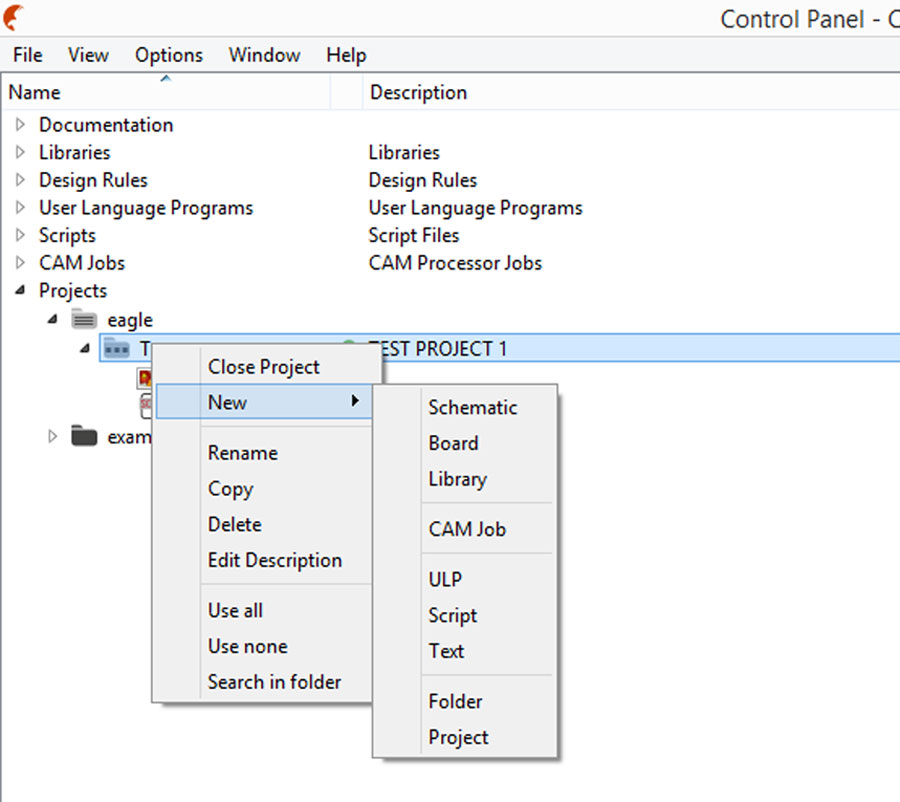
* Activate the Component Libraries (see step 5 - Eagle tutorial)
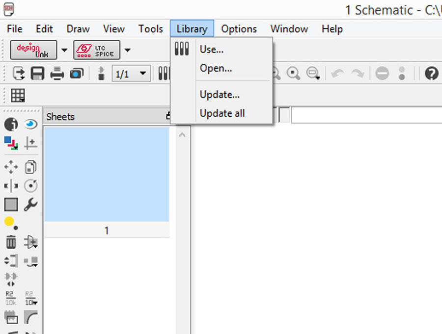
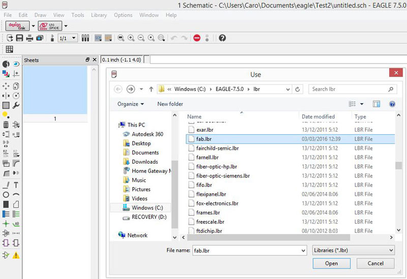
* Add Components from the Fab library (see step 6, 7 & 8 - Eagle tutorial)
-Make sure that the library is active looking the green point:
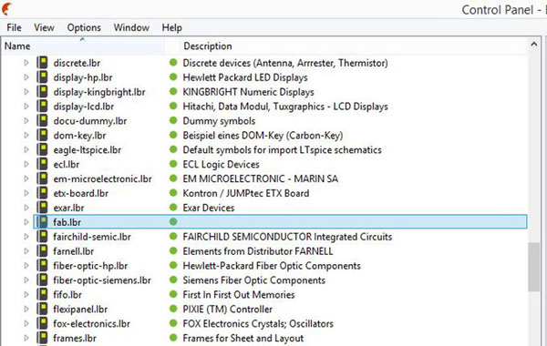
-Look the Fab Inventory spreadsheet which contains a list of all parts with codes and suppliers, and check with the datasheet of each component.
-Add a componet in eagle: press add on the command line or press add in the tool bar. You can search the components adding asterisks.
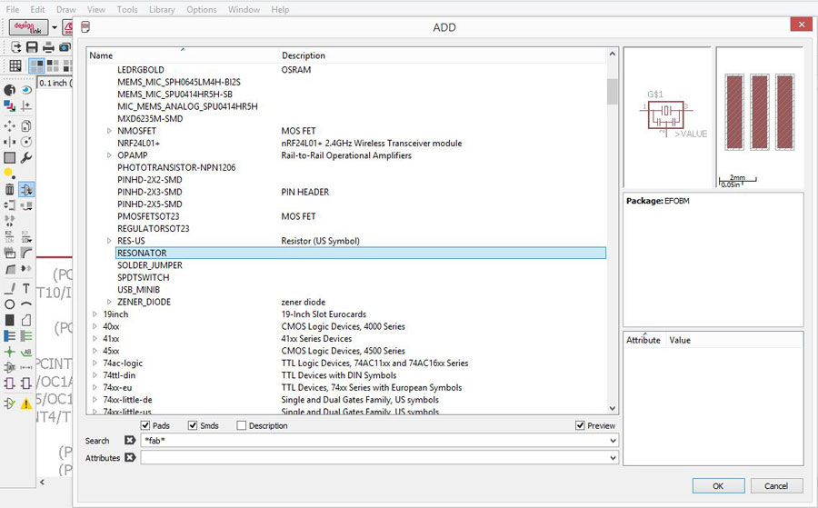
-PARTS:
1X 6-pin programming header: for programming the board
Inventory: 649-95278-101A06LF
Fab library symbol: AVRISPSMD
1X Microcontroller: attiny44A. Once the microcontroller is programmed, the program stored in non-volatile memory. This means that it will remember the program.
Inventory: ATTINY44A-SSU-ND
Fab library symbol: ATTINY44
1X FTDI header: powers the board and allows board to talk to computer
Inventory: CONN HEADER 36POS .100 R-A SMD (S1143E-36-ND)
Fab library symbol: FTDI-SMD-HEADER
1X 20MHz resonator: external clock. The attiny has a 8Mhz clock but the resonator is faster (increase the clock speed of the processor) and more accurate.
Inventory: CER RESONATOR 20.00MHZ SMD (XC1109CT-ND)
Fab library symbol: RESONATOR
2X Resistor (value 10k)
Inventory: RES 10.0K OHM 1-4W 1% 1206 SMD (311-10.0KFRCT-ND)
Fab library symbol: RES-US1206FAB
1X Button (OMRON switch)
Inventory: SW262CT-ND
Fab library symbol: 6MM_SWITCH6MM_SWITCH
GND
VCC
1X LED (Light Emitting Diode) - LEDs have polarity - the side with the line is the cathode and connects to the ground side.
Inventory: 160-1167-1-ND
Fab library: LEDFAB
1X Resistor (value 100 ohm)
Inventory: 311-100FRCT-ND
Fab library symbol: RES-US1206FAB
We have to calculate the current limiting resistor for the LED so we don't burn it. For that we need the values from the data sheet of the LED:
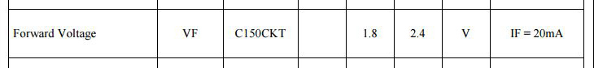
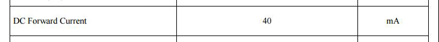
Led Calculator
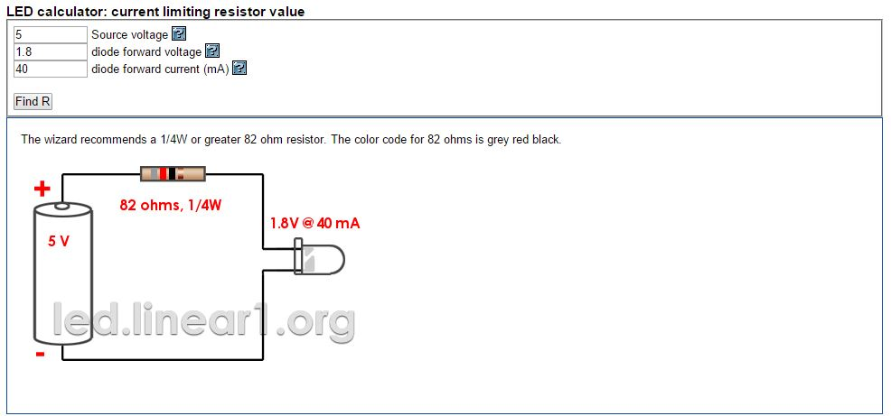
So one Led requires a 82ohm resistor, I chose to use one of 100ohm to be safe.
* INTERFACE / SCHEMATIC
For making the schematic (connections between parts) I used the image below from the Eagle Tutorial.
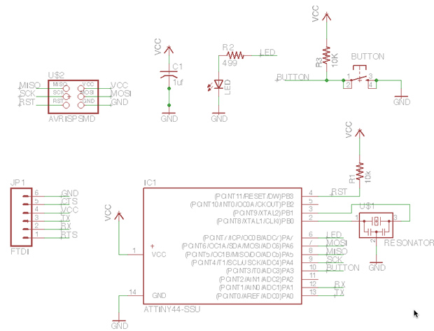
Commands (use the command line or the menu):
For moving a group of parts:
1_select move
2_select group
3_right click + command
The green line are the NETs, for naming them in order to make the connection (the program will ask you if you want to make it), you have to use the commands NAME and LABEL. The command VALUE addes value to components (i.e. ohm rating).
ERC = electronic rules check; this ensures your board will actually work.
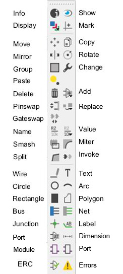
For understanding the connection of the button and the led was very useful using this images that Ferdi recommended to look for:
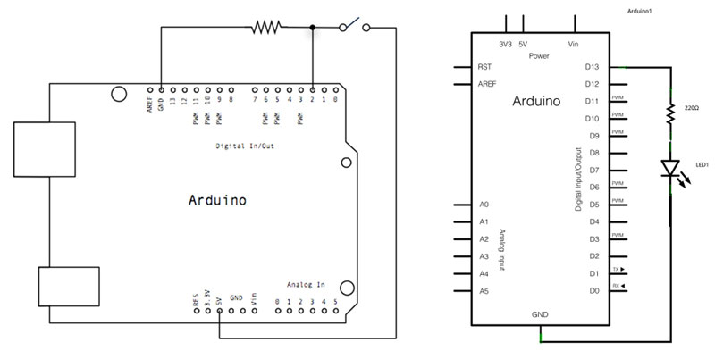
* INTERFACE / BOARD
For switching to the board interface from the schematic you can use the command line typing board or use the menu pressing Generate/switch to board.
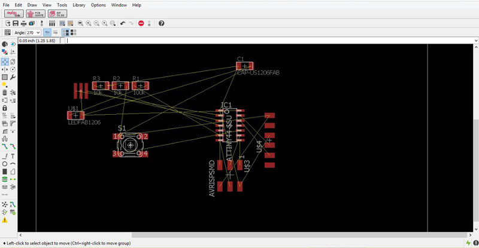
Commands for creating the traces between components:
MOVE/ROTATE: First I moved the components and rotated when was necesary.
SHOW: After typing this, select a component to see information about it displayed in the bottom left corner of the screen. Also, if you type show + [name of component] you can see that component highlighted. You can use this to see all the ground traces, for example (Eagle Tutorial).
ROUTE/RIPUP: You have to follow the yellow lines, and choose the wide of the traces. Our traces should be 0.4064mm (16mil/0.016inch) wide minimum.
DCR: Design rules check, DRC > CLEARANCE > CHECK on the parts. We have to check if the traces are distant enough so the drill bit can pass through them at least once. Therefore the value we have to use depends on the drill bit wich is 1/64 inches = 0.39 mm, we use 16mil=0.4mm.
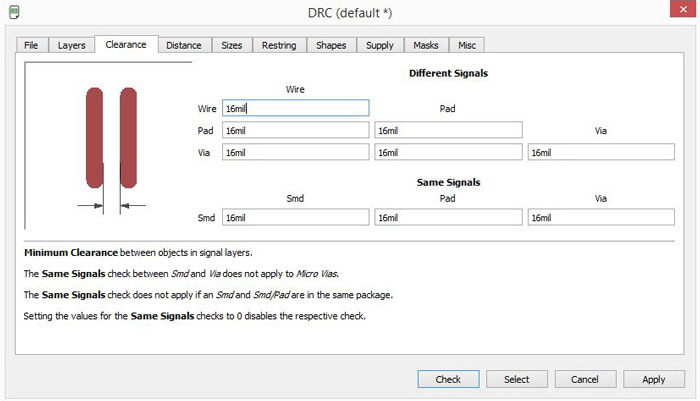
GRID: Editing the grid is very useful for correct the errors that the DCR give us. The rute have constraints given by the grid, so we can reduce the module of the grid in order to be more precise. The standard grid is SIZE 2.54 mm, but we can change it to dividends. The program also gives the possibility of be even more precise using Alt.

This was very useful for making the three traces of the middle.
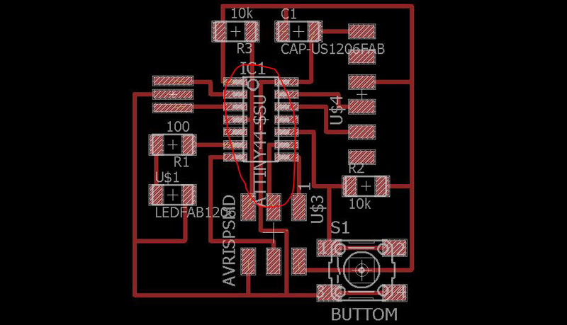